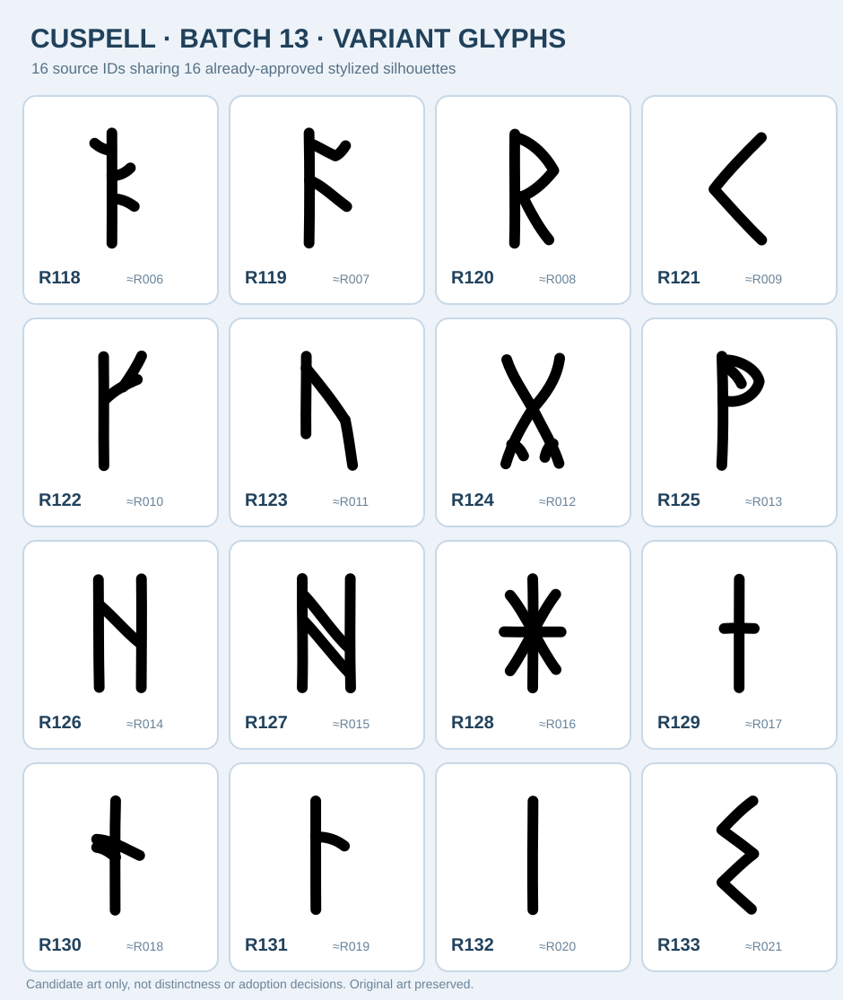
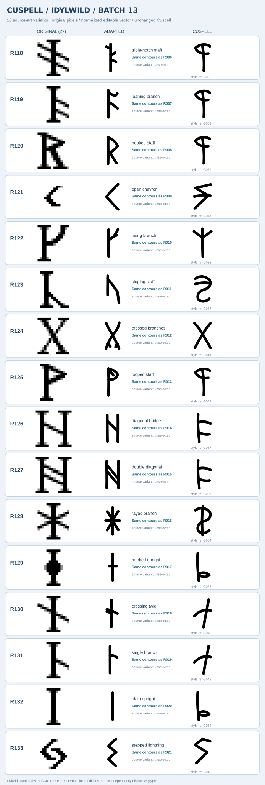

Each source variant keeps its own SVG, but matching previously approved stylized geometry is reused intentionally. Source pixels → adapted candidate → existing G-series glyph for style reference. No canonical adoption.
Candidate grid

Three-way visual comparison
